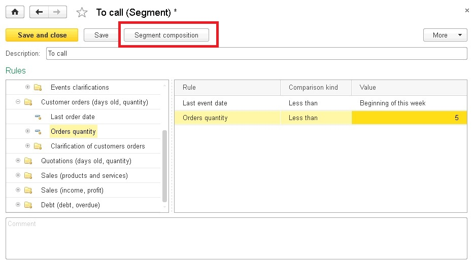
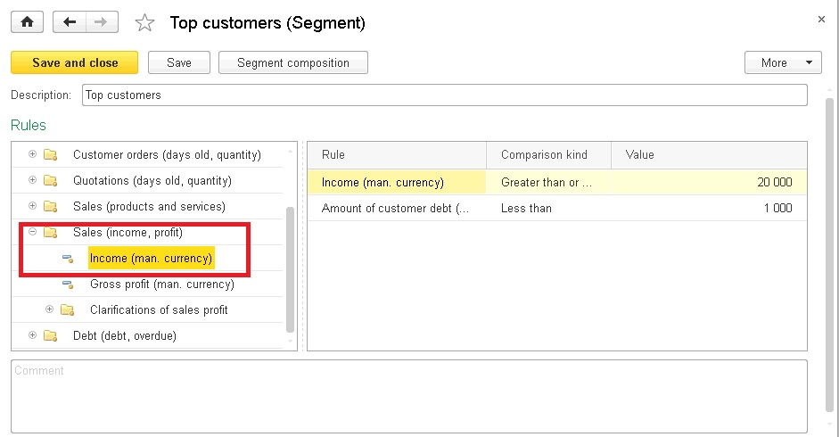

Counterparties classification: segments
All counterparties can now be classified by distinct criteria to facilitate working with them. For this purpose, we introduced two new notions: tags and segments. What do they stand for?
A segment is a set of specific rules according to which the counterparties database needs to be divided.
Segments ensure a more detailed classification of counterparties. You can use the list of segments located in the Sales - see also - Segments menu to create a new segment or to display existing segments. A segment example is shown below:

On the left there is a set of available rules which can be used in designing your segment. On the right there are the rules being used, type of comparison and the value. To set a rule, you need to move a rule from available rules to applied rules by double-clicking or with the mouse. On the shown screenshot there is a segment which can be described as follows: "to find counterparties of manager Abdulov which are located in Moscow and for which no events were recorded starting from the previous week". Note that the date of the last event given relatively: "start of the previous week". When specifying dates if an absolute value is specified, for example, November 17, 2014, then it is required to refresh this date manually in the segment, in this case – every week. While the relative date will be defined automatically when necessary. By clicking Segment composition you can view the list of counterparties which currently satisfy the specified rules. This list is not kept in the base, it is dynamically generated each time when the segment is addressed.
Here is another example of specifying a segment:

In this example we determined our regular customers as follows "contractors with the "V.I.P." tag or the "Platinum" tag, for which cash receipts since the start of the year exceeded 100 000". To specify a number of possible tags, the In list comparison kind is used, with which you can specifiy the Value as a separate list. The Revenue (man. currency) rule is located in the Sales (revenues, profit) group of available rules. Note that in this group there is the Sales revenues refinement subgroup. Such subgroups contain additional parameters used to define main groups. IN our case we indicate the period for which the revenues have to be calculated. If this additional parameter is not specified, the application will calculate revenues for all the time. You may experiment and make any segments using various combinations of rules from the set of available rules.
When you set tags and adjust segments, you can use the tags and segments for quick filtering in the list of counterparties and address book:
On top there appears a new shortcut bar with several selection options as follows:

When filtering is made on several tabs, they all will be summed up so that the resulting list will include counterparties satisfying all the specified conditions. IN addition, to remind of the filterings made, next to the option names there will be numbers of the specified values in brackets: